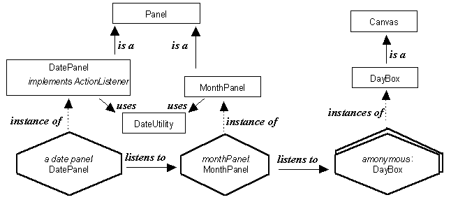
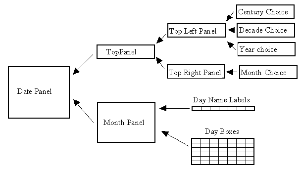

The instance diagram for the DatePanel class is given in Figure 3.10.

Figure 3.10 DatePanel class instance diagram.
The DatePanel contains an instance of the MonthPanel class which it listens to in order to be informed when the user selects a date in the month. The MonthPanel instance contains an iteration of DayBox instances which it listens to in order to be informed that a date has been selected. Both the DatePanel and MonthPanel class make use of the DateUtility class which provides various class wide methods for the manipulation of dates. The layout relationships between these instances, and other components which do not have to be developed, are illustrated in Figure 3.11.

Figure 3.11 DatePanel, physical layout.
The TopPanel, TopLeftPanel and TopRightPanel are needed to provide the required layout of the option Choice menus shown at the top of Figure 3.7. The MonthPanel has a row of DayName Labels above the grid of DayBoxes which provide the lower part of the interface shown in Figure 3.7.